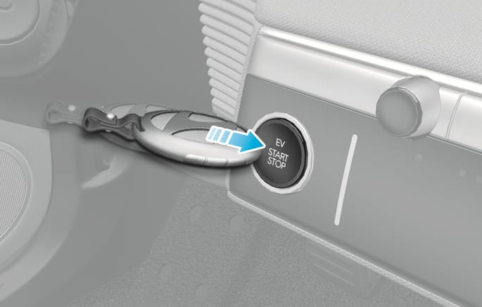
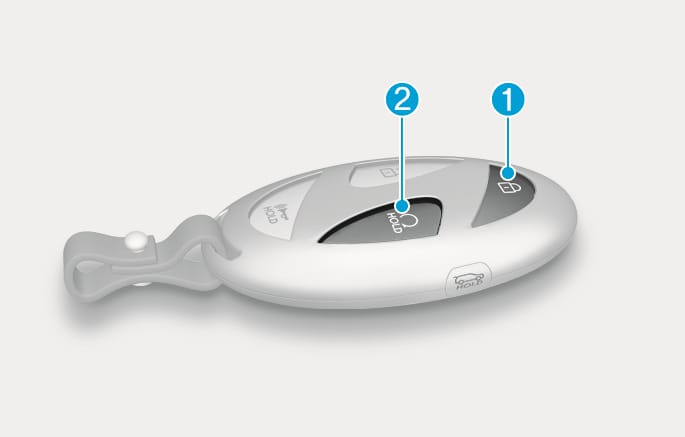

시동이 걸리지 않는 경우
변속기 위치가 'P'(주차)인지 확인한 후 다음 지시를 따르십시오.
-
스마트 키의 배터리 방전이나 전파 간섭으로 인해 시동이 걸리지 않는 경우 스마트 키의 끝부분으로 시동 버튼을 누르십시오.

2C_StartVehicleWithPushingSmartKey
-
제동 스위치 퓨즈가 단선된 경우, 'ACC' 상태에서 브레이크 페달을 밟은 상태로 시동 버튼을 10초 동안 누르십시오.
-
차량의 시동 및 모든 전기 장치를 완전히 끈 후 시동을 다시 거십시오.
위와 같은 방법으로 시동이 켜지지 않으면 당사 직영 하이테크센터나 블루핸즈에서 차량을 점검하십시오.
-
비상시 반드시 필요한 경우가 아니라면 시동 버튼을 10초 이상 길게 누르지 마십시오. 브레이크 페달을 밟지 않은 상태에서 시동이 켜지면 위험할 수 있습니다.
-
주행 중 시동이 꺼지는 경우 'P'(주차)로 변속하지 마십시오. 차량이 움직이는 동안 'P'(주차)로 변속하면 감속기가 손상될 수 있으며 제동 거리가 더 길어질 수 있습니다. 브레이크 페달을 평소보다 힘껏 밟아 차량을 정차하십시오.
-
가속 페달을 밟으면서 시동을 걸지 마십시오. 차량이 빠르게 가속하며 사고가 발생할 수 있습니다.
차량이 완전히 멈춘 상태에서 다음과 같이 차량을 정지하십시오.
-
브레이크 페달을 밟은 상태로 P 버튼을 누르십시오.
-
'P'(주차)로 변속됩니다.
-
-
브레이크 페달을 밟은 상태로 주차 브레이크를 체결하고 클러스터에 브레이크 경고등이 켜져 있는지 확인하십시오.
-
주차 브레이크를 체결하려면 전자식 파킹 브레이크(EPB) 스위치를 위로 당기십시오.
-
-
브레이크 페달을 밟은 상태로 시동 버튼을 눌러 시동을 끄십시오.
차량을 주차하거나 정차한 후 'P'(주차)로 변속하지 않는 경우 외부 충격에 의해 차량이 움직일 수 있으므로 주의하십시오.
경사가 급한 장소에는 주차하지 마십시오. 주차 중인 차량이 움직이는 경우 심각한 사고가 발생할 수 있습니다.
-
전기차 주행 중에는 엔진 소음이 발생하지 않으므로, 엔진 소음 대신 가상 엔진 사운드 시스템(Virtual Engine Sound System, VESS)을 제공해 보행자가 차량 접근을 인지할 수 있도록 돕습니다.
-
가상 엔진 사운드 시스템은 차량이 주행 가능 상태(
¢ )인 동안 작동하며, 변속기 위치가 'P'(주차)인 동안에는 작동하지 않습니다.
-
차량 주행 시 엔진 소음이 없다는 점에 유의하십시오.
-
운전 중 항상 주위 상황을 살피고 위험 상황에 대비하십시오.
-
주차 후 또는 신호 대기 중 정차한 후 차량을 출발하기 전에 차량 주변에 어린이나 장애물이 있는지 충분히 확인하십시오.
-
후진하기 전에는 후방을 육안으로 확인하십시오. 후진 시 보행자가 차량 소리를 인식하지 못할 수 있습니다.

2C_SmartKeyRemoteStartButton
차량과 10 m 이내 거리에서 스마트 키의 도어 잠금 버튼(1)을 누른 후 4초 이내에 원격 시동 버튼(2)을 길게 누르십시오.
-
시동이 켜지며 비상 경고등이 깜빡입니다.
원격으로 시동을 끄려면 원격 시동 버튼(2)을 다시 누르십시오.
-
모든 도어가 잠겨 있으며, 변속기 위치가 'P'(주차)일 때만 원격으로 시동을 걸 수 있습니다.
-
후드나 테일게이트가 열려 있으면 원격 시동 기능이 작동하지 않습니다.
-
원격 시동 후 10분 이내에 차량에 탑승하지 않으면 시동이 꺼집니다.
-
원격 시동 후 스마트 키를 휴대하지 않고 차량에 탑승하는 경우 원격 시동 상태가 유지되며, 10분 후 시동이 꺼집니다.